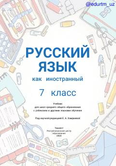

РЯ7-sinf o'quvchilari uchun rus tili fani bo'yicha amaliy darslik.
Mazkur darslik umumiy o'rta ta'lim maktablarining 7-sinf o'quvchilari uchun rus tilini chet tili sifatida o'qitishga mo'ljallangan. Kitobda nutqiy faoliyat turlari bo'yicha tizimli ishlar olib borilib, zamonaviy metodik talablar va QR-kodlar asosida audio materiallar taqdim etilgan.